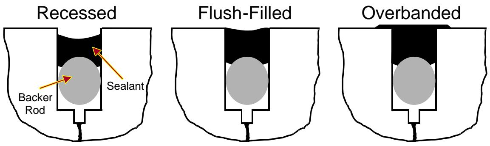
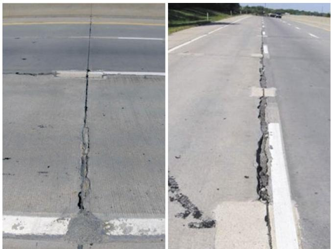
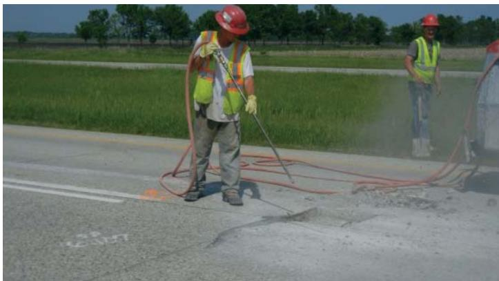
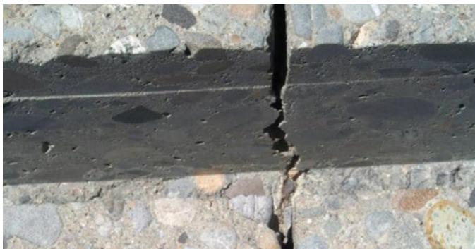

Sealant Application and Performance
Sealant application and performance is the practice of filling concrete pavement joints and cracks with a liquid or pre‑formed material so that water and incompressible debris cannot infiltrate, thereby mitigating moisture‑related distresses such as pumping, base erosion, faulting, spalling and blow‑ups[1][2][4][5][6][7]. The process demands a sealant selected for durability, extensibility and adhesion that matches the joint’s geometry, climate and traffic conditions; the reservoir must be meticulously cleaned, sand‑blasted, air‑blown and fitted with a properly sized closed‑cell backer rod before the material is placed flush (or recessed) to achieve the required shape factor—width/depth = 1 for hot‑poured asphalt sealants or 0.5 for silicone/cold‑poured products[2][3][4][5]. Ongoing curing, protection and scheduled resealing—generally every one to four years unless modern formulations extend service life—preserve joint integrity across varying climates and traffic speeds, especially on low‑speed roadways where water can become trapped[1][2][4][5][7].
Sources (7)
Purpose and applicability
The seals address the pervasive problem of water and incompressible‑material intrusion into concrete pavement joints and cracks, which otherwise triggers moisture‑related distresses (pumping, base erosion, settlement, faulting) and pressure‑induced failures (spalling, blow‑ups, buckling). The guides state that “Joints are filled with sealant to prevent ingress of deleterious materials.” By doing so the method “reduce the amount of moisture that can infiltrate a pavement structure, thereby reducing moisture-related distresses such as pumping, joint faulting, base and subbase erosion, and corner breaks.” When existing joints have deteriorated, “Joint resealing consists of placing a sealing material in an existing joint or crack to reduce moisture infiltration and minimize intrusion of incompressibles,” followed by proper preparation—cleaning, backer‑rod installation, and flush‑filling—to restore long‑term joint integrity across climates. [1][2][4][5][6][7]
The following figure illustrates typical joint sealant configurations used to achieve these performance goals.

Joint sealant configurations. [7]The figure displays three cross-sectional diagrams of concrete pavement joints labeled Recessed, Flush-Filled, and Overbanded to illustrate different sealant placement geometries. In the recessed configuration, a backer rod is visible within the joint reservoir beneath the black sealant material.
[1] — Ch. 8 (pp. 257–259); [2] — Joint Resealing (p. 76); [4] — Joint Resealing (p. 36); [5] — Ch. 9 (pp. 240–250); [6] — Ch. 6 (p. 64); [7] — Ch. 10 (pp. 194–196)
Sealant application is appropriate when a joint must be protected from water infiltration and incompressible objects and the design criteria—pavement use, environment, cost, performance, joint type and spacing—call for sealing. The guides also require that the reservoir be meticulously prepared by washing away saw slurry, sand‑blasting the top inch of each face to provide a clean, textured surface, and blowing oil‑free air (minimum 120 ft³/min at 90 lb/in²) before placing a sealant whose shape factor matches its type (width/depth ratio of 1 for hot‑poured asphalt‑based sealants or 0.5 for silicone and cold‑poured sealants, with compression seals limited to 20–50% compression).
Sealant filling is appropriate when the overlay was originally constructed with sealed or filled joints, when inspection reveals joint distress such as migration, spalling, tenting or buckling, and in environments prone to moisture or freeze‑thaw cycles or on low‑speed roadways (45 mph or less) where water can be trapped; in those cases the reservoir should be flush‑filled with a hot‑poured material. Sealant application is appropriate for existing concrete joints or cracks that have already been sealed and require periodic resealing to keep moisture out and prevent pressure‑related distress. The practice should follow the sealant’s service life—historically one to four years, but extendable with modern materials and proper preparation.
Sealant application is chosen when the overlay’s climate, the governing state agency specifications, or the slab geometry indicate that a joint sealant is needed—typically for longer joints or where water entering the joint cannot be allowed to exit the pavement. Sealant application is appropriate for joint resealing and crack sealing when “hot‑applied asphalt sealant materials or cold‑applied silicone sealant materials” can be placed. When sealants or fillers are used, the contractor may select hot‑poured rubberized material meeting ASTM D6690 or AASHTO M 301, silicone material per state spec, or preformed compression seals conforming to ASTM D2628 or AASHTO M 220.
Conversely, when an overlay was designed without sealed joints and is performing adequately without filled or sealed joints, a secondary application is considered unnecessary; removing existing sealant from a joint that was originally sealed can be detrimental, so another preservation method should be used instead. If the design permits drainage of water and the joints are short, a joint filler is preferred. Another method—leaving the joint unsealed—should be used when agency policy or design guidance indicates sealing is not required. When a pavement has not been sealed originally—or when design and construction measures are preferred over sealing in new construction—alternative methods should be employed.
Pre‑formed sealant types … see greater use in new pavement construction, particularly where longterm performance is sought. However, when joints exhibit uneven widths, minor spalling, or overall non‑uniformity, their use is precluded and another method—such as adjustable hot‑applied or silicone sealants—should be selected. For cases where simplicity is desired, an appropriately sized pre‑formed compression seal may replace the filler‑and‑sealant system. Preformed neoprene compression seals belong to that alternative category; they are installed as factory‑produced components during new pavements and are not suited for resealing work. [1][4][5][6][7]
The following figure illustrates candidate distresses relevant to these sealant application scenarios.

Severe longitudinal cracking and spalling along a concrete pavement joint. [5]The image displays two views of a concrete highway surface featuring a prominent, jagged crack running longitudinally down the center of the lane.
[1] — Ch. 8 (pp. 257–259); [4] — Joint Resealing (p. 36); [5] — Ch. 9 (pp. 240–250); [6] — Ch. 6 (p. 64); [7] — Ch. 10 (pp. 194–195)
Required inputs
Sealant application for concrete pavements requires selecting a material that meets performance and environmental demands. The guides agree that the sealing material may be a liquid—applied hot or cold—or a pre‑formed expansion‑joint filler, with “Sealing material is typically a liquid (hot or cold) but can also be an expansion joint filler (preformed).” Materials cited include hot‑poured rubberized sealants (ASTM D6690/AASHTO M 301), cold‑applied silicone sealants per state specifications, bitumen‑based thermoplastic sealants that “soften upon heating and harden upon cooling,” and low‑modulus rubberized asphalt sealants favored in colder climates for their “increased extensibility.” Preformed compression seals (ASTM D2628/AASHTO M 220) are noted as having greater use in new construction.
The required mixture properties focus on durability, extensibility, and adhesion. The guides state that “the desired properties of the sealant are durability to traffic and environment, extensibility that allows joint/crack movement without rupture, and adhesiveness that permits adherence to the crack or joint walls.” Adequate cured strength of any surrounding patch material is essential before cutting compressible inserts: “The compressible inserts are sawed out to the dimensions specified in the contract documents when the patch material has attained sufficient strength to support concrete saws.” Proper shape factor is achieved by filling the joint reservoir flush with the overlay surface, as recommended: “It is recommended to fill the reservoir flush with the overlay surface when applying a hot‑poured sealant material,” which keeps the sealant pliable under tire impacts.
Site conditions governing selection include joint geometry, climate, traffic speed, and agency requirements. Uniform joints free of significant spalling are required; uneven widths or minor spalling can preclude certain sealants. Climate considerations are highlighted: “In wet or freezing climates, joint filling/sealing is also recommended…” and low‑speed roadways (≤45 mph) should be designed with filled joints: “According to ACPA (2018), concrete overlays on roadways serving low-speed traffic (45 mph or less) should be designed with filled joints.” The decision “depends on the climate in which the overlay is built, the state agency overseeing the project, and the overlay’s slab geometry.” Proper joint preparation—cleaning, restoring reservoir shape, installing a backer rod that is flexible, non‑absorbent, sized about 25 % larger than the joint width, and with a melting point at least 25 °F above sealant temperature—is required: “Closed‑cell products … are recommended because of their nonabsorbent nature,” “The melting temperature of the backer rod material should be at least 25°F higher…,” and “The backer rod material should be about 25% larger in diameter than the joint width.” For expansion joints, a preformed filler is placed 0.75–1 in. below the slab surface and capped with a hot‑applied sealant: “preformed filler material … placed 0.75 to 1 in. below the slab surface” and “hot‑applied joint sealant is then applied as a “cap” to seal the expansion joint.” [2][3][4][5][6][7]
The following figure illustrates the specific dimensional requirements for overlay joints relative to existing slab cracks and faulting conditions.
 the figure.7 COC–B joint detail showing the widths of the overlay joint, sawcut, and underlying crack. [6]
the figure.7 COC–B joint detail showing the widths of the overlay joint, sawcut, and underlying crack. [6]
The figure illustrates a cross-section of a bonded concrete overlay on existing pavement, highlighting the alignment between the new transverse overlay joint (X), the sawcut in the existing slab (Y), and an underlying crack (Z). This detail demonstrates the application of sealant concepts in pavement rehabilitation by showing how joint preparation and sealing are critical for ensuring bond integrity and preventing distresses like faulting.
[2] — Joint Resealing (p. 76); [3] — Verify the following: (p. 34); [4] — Joint Resealing (p. 36); [5] — Ch. 9 (pp. 240–250); [6] — Ch. 6 (p. 64); [7] — Ch. 10 (p. 196)
Sealant joint design across the guides requires a reservoir shape factor that matches sealant type—“a width‑to‑depth ratio of 1 for hot‑poured asphalt sealants” and “0.5 for silicone or two‑component cold‑poured products.” Compression seals must be capable of compressing between about 20 % and 50 % over the anticipated temperature range. Saw cuts are required to be uniform and cut to a depth of one‑quarter to one‑third of slab thickness (T/4–T/3); they may be single or double as permitted by the manufacturer. Prior to sealant placement, joint faces must be water‑washed, sandblasted on the top inch of each face, and air‑blown with oil‑free compressed air delivering at least 120 ft³/min flow and 90 lb/in² nozzle pressure.
The guides also stipulate that any compressible inserts be cut to the exact dimensions shown in contract drawings, and cutting may only proceed once the repaired concrete has attained sufficient strength to support a concrete saw without damage—“the strength of the patch material therefore serves as a pre‑construction test.” After cuts, all joints must be thoroughly cleaned and resealed in accordance with contract specifications.
For overlay applications, the joint reservoir must sit flush with the pavement surface when a hot‑poured sealant is placed, following the dimensions illustrated in ACPA Figure 25 for flush‑filled joints. On roadways with design speeds of 45 mph or less—including urban arterials and sections with curb and gutter—the overlay should be designed with filled joints to prevent water and incompressible intrusion, and existing overlays that were originally constructed with sealed or filled joints must be resealed or refilled rather than having the original sealant removed.
Backer‑rod requirements include a flexible, non‑absorbent (closed‑cell preferred) material whose melting point exceeds the sealant temperature by at least 25 °F. New joint reservoirs are typically 1–2 in. wide with a preformed filler set 0.75–1 in. below the slab surface; for resealing, the joint is sawed slightly wider and deep enough to receive a backer rod sized about 25 % larger in diameter than the joint width so it fits tightly without movement. The rod is inserted immediately after media blasting, seated to the proper depth with no gaps at intersections while minimizing stretch. Sealant is placed from the bottom up and recessed at the surface to avoid extrusion as the joint closes.
Finally, sealant selection for resealing must conform to ASTM D 6690, which defines material properties, performance testing, and acceptance criteria for high‑quality rubberized asphalt sealants. [1][3][4][5][7]
[1] — Ch. 8 (pp. 257–259); [3] — Verify the following: (p. 34); [4] — Joint Resealing (p. 36); [5] — Ch. 9 (pp. 247–250); [7] — Ch. 10 (p. 196)
Work sequence
The guides agree that before any sealant work can start, two preparatory domains must be satisfied. First, a proper sealant material must be selected; when planning a joint resealing project, one of the primary design activities is the selection of an appropriate sealant material. Second, the joint itself must be fully prepared. The joint preparation sequence begins with removal of any existing sealant and refacing of the joint surface, followed by cleaning of the reservoir and installation of a backer rod to restore proper shape and support. Immediately after wet sawing, a water wash removes the slurry from the sawing operation, and an air‑blowing operation removes sand, dirt, and dust from the joint and pavement surface. Only after these steps are completed can sealant placement commence. [1][2][3][4][5][6][7]
The figure below illustrates the air blasting process used to remove loose debris from the joint.

Air blasting to remove loose debris from a concrete pavement crack. [3]A construction worker wearing safety gear operates a high-pressure hose to clean the interior of a longitudinal crack in a concrete road surface.
[1] — Ch. 8 (pp. 257–259); [2] — Joint Resealing (p. 76); [3] — Verify the following: (p. 34); [4] — Joint Resealing (p. 36); [5] — Ch. 6 (p. 160), Ch. 8 (p. 208), Ch. 9 (pp. 247–250); [6] — Ch. 6 (p. 64); [7] — Ch. 10 (pp. 194–201)
- Remove any existing sealant from the joint.
- Verify that the concrete adjacent to the joint has attained sufficient strength to support sawing.
- Saw the joint or crack to the required depth/width—typically one‑quarter to one‑third of slab thickness, a single or double cut as called for by the sealant system, and, when specified, create a slightly wider and deeper reservoir using a crack‑chasing saw to achieve the proper shape factor.
- Immediately after wet sawing, flush the joint with clean water in the direction of cutting to remove slurry.
- Reface the joint faces to restore proper geometry.
- Clean and profile the exposed surfaces: sandblast or abrasive‑blast the top inch of each reservoir face at an angle to eliminate residue and provide texture for adhesion.
- Remove all dust and debris with a final air‑blowing (or vacuum sweep) using a compressor that delivers at least 120 ft³/min at 90 lb/in² nozzle pressure.
- Install a backer rod to set the correct depth and shape factor; replace any deteriorated preformed filler along the joint length if required.
- Place fresh sealant—hot or cold liquid, or a preformed filler—in accordance with the joint design and manufacturer’s instructions, installing from the bottom upward and leaving it recessed at the surface so traffic‑induced closure will not force extrusion. [1][2][3][5][7]
The figure below illustrates an expansion joint detail with a backer rod installed to ensure proper joint shape factor.
 Cross-section of an expansion joint detail showing the placement of a backer rod and formed-in-place sealant. [5]
Cross-section of an expansion joint detail showing the placement of a backer rod and formed-in-place sealant. [5]
The figure displays a cross-sectional view of a concrete pavement joint where preformed isolation filler has been removed to create a reservoir for new materials. A backer rod is installed within the lower portion of this gap, and a formed-in-place sealant fills the upper section above it. This assembly demonstrates the installation process where a reservoir is fitted with a backer rod before material is placed flush or recessed to achieve the required shape factor for joint sealing.
[1] — Ch. 8 (pp. 257–259); [2] — Joint Resealing (p. 76); [3] — Verify the following: (p. 34); [5] — Ch. 8 (p. 208), Ch. 9 (pp. 249–250); [7] — Ch. 10 (p. 201)
The guides require that “Immediately after wet sawing, a water wash removes the slurry from the sawing operation.” After the joint has sufficiently dried, “a sandblasting operation removes any remaining residue.” An air‑blowing step must occur “just prior to sealant pumping” to provide an extremely clean reservoir. Following air‑blasting, the backer rod must be placed “as soon as possible after the joints are air blasted,” using a properly fitted insertion tool: “The backer rod should be installed in the joint with a properly fitted backer rod insertion tool.” [1][5]
The following figure illustrates these critical cleaning steps, showing media blasting to remove residue on the left and air blasting immediately prior to dowel placement on the right.

Close-up of a concrete pavement joint showing the reservoir prepared for sealant installation. [5]The image displays a vertical gap in a concrete surface, revealing the internal structure and aggregate composition of the material.
[1] — Ch. 8 (pp. 257–259); [5] — Ch. 9 (pp. 247–248)
Staging and logistics
The guides note that “Sealant material selection considerations include the environment, cost, performance, joint type, and joint spacing.” Joint geometry is further limited by the aggregate composition; “Concrete containing harder coarse aggregates, such as gravel or granite, will expand and contract more with a given temperature change than a concrete containing limestone.” Because of seasonal temperature swings, compression seals must stay within defined limits: “Compression sealants are selected such that the maximum compression of the seal is 50 percent and the minimum is 20 percent through the anticipated ambient temperature cycles in the area.” Proper site access for joint preparation also requires adequate air supply – “The compressor should deliver air at a minimum 120 ft3/ min and develop at least 90 lb/in2 nozzle pressure.”
Weather and climate impose additional constraints. In colder or wet periods, “In wet or freezing climates, joint filling/sealing is also recommended for transverse and longitudinal joints in COA–B overlays (ACPA 2018).” Low‑speed sections with curbs demand extra care because “Sealing joints on sections with curb and gutter is advised because curbs can readily trap incompressibles and slower traffic is not as capable as faster traffic of generating sufficient air movement to blow the incompressibles off the pavement surface.” When hot‑poured materials are used, “It is recommended to fill the reservoir flush with the overlay surface when applying a hot-poured sealant material.”
Backer‑rod handling is temperature sensitive: “The melting temperature of the backer rod material should be at least 25°F higher than the sealant application temperature to prevent damage during sealant placement” and it must be placed promptly – “The backer rod should be installed in the joint … as soon as possible after the joints are air blasted.”
Overall climate dictates whether a filler or a sealant is appropriate: “depends on the climate in which the overlay is built,” and the decision also hinges on drainage design – “The need for joint material depends on whether the design allows for water entering the joint to leave the pavement.” Long‑term performance is governed by “Climate conditions (at time of installation and during the life of the sealant).” Exposure to weathering can degrade materials – “are affected by weathering to some degree,” leading many northern jurisdictions to specify flexible options – “low modulus rubberized asphalt sealants … are used for sealing operations in many northern states because of their increased extensibility.” [1][4][5][6][7]
[1] — Ch. 8 (pp. 257–259); [4] — Joint Resealing (p. 36); [5] — Ch. 9 (pp. 247–248); [6] — Ch. 6 (p. 64); [7] — Ch. 10 (pp. 195–196)
Quality control and acceptance
Inspectors must verify that joints are cleaned of slurry, sandblast residue, oil, and any debris before sealant placement. The joint reservoir must be prepared with the correct shape factor; hot‑poured asphalt‑based sealants typically need a reservoir shape factor (width/depth ratio) of 1, while silicone and two‑component, cold‑poured sealants typically need a reservoir shape factor of 0.5. The saw cut that creates the reservoir must be uniform in width across the joint, and its depth must allow placement of a backer rod to achieve the required shape factor.
Backer rods must be flexible, nonabsorbent, compatible with the sealant, preferably closed‑cell, about 25 % larger in diameter than the joint width, and have a melting temperature at least 25 °F higher than the sealant application temperature. They are positioned to the proper depth without gaps or excessive stretch.
The installed sealant must be capable of compressing between roughly 20 % and 50 % over the anticipated temperature cycle, providing sufficient low‑temperature extensibility and resistance to high‑temperature softening and tracking, and maintaining elastic and thermal behavior as required by ASTM D 6690. It must also demonstrate durability to traffic loads and environmental exposure, and possess adhesiveness that permits firm bonding to joint walls.
Inspection includes confirming that the correct joint type was selected, that the sealing material matches design specifications, and that any compressible inserts are sawed to contract‑specified dimensions after the surrounding concrete has attained sufficient strength. For expansion joints, the geometry (1–2 in. wide with pre‑formed filler set 0.75–1 in. below the slab) is checked, and existing filler is replaced if deteriorated.
Performance signs such as joint migration, spalling, or tenting/buckling are examined. When a hot‑poured sealant is used on an overlay, it should be placed flush with the overlay surface (or recessed from the surface to avoid extrusion) to ensure long‑term durability, especially on low‑speed roadways (45 mph or less) where filled joints are required.
All work must conform to contract documents and applicable standards. [1][2][3][4][5][7]
[1] — Ch. 8 (pp. 257–259); [2] — Joint Resealing (p. 76); [3] — Verify the following: (p. 34); [4] — Joint Resealing (p. 36); [5] — Ch. 6 (p. 160), Ch. 9 (pp. 247–250); [7] — Ch. 10 (p. 196)
Curing, protection, and handoff
The completed sealant work is protected and allowed to cure through a series of steps described across the guides. After the sealant patch has cured enough to bear the load of concrete saws, the compressible inserts are cut out to the dimensions required by the contract documents, ensuring that the underlying material is not damaged. Once the insert removal is complete, all joints are thoroughly cleaned and then resealed in accordance with the contract specifications, providing a protective seal over the finished work. The joint is protected by installing a flexible, non‑absorbent closed‑cell backer rod immediately after air blasting. The rod is placed with a fitted insertion tool (or handheld roller) so that its diameter is roughly 25 % larger than the joint width, ensuring a snug fit without gaps and minimal stretch to avoid shrinkage. Its melting point must be at least 25 °F above the sealant application temperature, preventing damage during placement. Proper depth and continuous coverage at intersections complete the protection before the sealant cures. Once a hot‑applied thermoplastic sealant has been placed on the concrete pavement, it solidifies as it cools; the curing action is simply the material’s transition from a softened state back to ambient temperature where it hardens without any chemical change. No special protective coverings are specified—only the need to keep traffic and contaminants away until the sealant has cooled sufficiently. [3][5][7]
The proper installation of this backer rod is illustrated in the following figure.
 Worker inserting a closed-cell backer rod into a concrete pavement joint using a handheld insertion tool. [5]
Worker inserting a closed-cell backer rod into a concrete pavement joint using a handheld insertion tool. [5]
The image shows a worker standing on a concrete surface, holding a long metal wand connected to a hose, which is being used to insert a black compressible rod into a narrow vertical slot in the pavement.
[3] — Verify the following: (p. 34); [5] — Ch. 9 (pp. 247–248); [7] — Ch. 10 (p. 196)
Work can be opened to construction traffic or users after the patched section reaches sufficient strength to support concrete saw cutting, as required by the contract; at that point the compressible inserts are removed to their specified dimensions and all joints are cleaned and resealed according to the contract documents before traffic is permitted. [3]
[3] — Verify the following: (p. 34)
Expected performance and maintenance
The guides note that when sealants fail, water readily penetrates joints and cracks, allowing excess moisture to soften or erode the subgrade or base and to pump fines upward. Excess water can contribute to subgrade or base softening, erosion, and pumping of subgrade or base fines over time. This degradation results in a loss of structural support, pavement settlement, and/or faulting. In addition, incompressible debris that enters an unsealed joint can generate pressure‑induced failures; sealing prevents incompressible objects from entering joint reservoirs. Incompressibles contribute to spalling and, in extreme cases, may induce blow‑ups. Joint movement and closure over the service life push sealant out of the joint, creating exposed shoulders that traffic pulls off, which leads to material loss and surface damage; Over time, expansion joints start to close, possibly resulting in extrusion of the sealant and subsequent loss of material as traffic pulls at the exposed material above the pavement surface. Improper backer‑rod selection or placement can leave voids that become pathways for water and debris, further compromising joint integrity. The combined effect of these mechanisms manifests as spalling, tenting/buckling, joint migration, pumping, faulting, base erosion, corner breaks, and premature sealant loss. [1][2][4][5][7]
The following figure illustrates common failure modes such as concrete pavement joint spalling and blowups that result from these degradation mechanisms.
 Examples of concrete pavement joint sealant failures showing missing material and incompressible debris. [5]
Examples of concrete pavement joint sealant failures showing missing material and incompressible debris. [5]
The figure displays two views of a longitudinal concrete pavement joint, illustrating the consequences of failed or absent sealant application.
[1] — Ch. 8 (pp. 257–259); [2] — Joint Resealing (p. 76); [4] — Joint Resealing (p. 36); [5] — Ch. 9 (pp. 247–250); [7] — Ch. 10 (p. 194)
Across the guides, preventive maintenance for sealants begins with a systematic verification that joints have been properly cleaned and sealed according to contract requirements. Routine inspections look for signs of moisture ingress, joint faulting, or degradation of the sealant material; when deterioration is observed—or at intervals suggested by performance experience—resealing is scheduled. The preparation sequence starts with immediate removal of saw slurry, as noted in one guide: “Immediately after wet sawing, a water wash removes the slurry from the sawing operation.” After the joint faces are cleaned and dried, the standard resealing workflow is applied: “A joint resealing procedure follows five basic steps: old sealant removal, joint refacing, joint reservoir cleaning, backer rod installation, and new sealant installation.” Prior to any repair, crews confirm that the joint meets design shape‑factor and compression criteria, and they verify compliance with contract documents: “Verify that joints are cleaned and sealed according to contract documents.” Because sealant effectiveness can decline within a few years—“sealant materials became ineffective anywhere from 1 to 4 years after placement”—the monitoring program includes periodic reassessment and timely resealing to sustain joint integrity and pavement durability. [1][2][3][4][5][7]
[1] — Ch. 8 (pp. 257–259); [2] — Joint Resealing (p. 76); [3] — Verify the following: (p. 34); [4] — Joint Resealing (p. 36); [5] — Ch. 6 (p. 160), Ch. 8 (p. 208), Ch. 9 (pp. 249–250); [7] — Ch. 10 (pp. 194–201)
References
- Integrated Materials and Construction Practices for Concrete Pavement: A State-of-the-Practice Manual (2nd edition IMCP Manual, 2019) [link]
- Guide to Cement-Based Integrated Pavement Solutions (2011) [link]
- Guide for Partial-Depth Repair of Concrete Pavements (2012) [link]
- Concrete Overlay Repair and Replacement Strategies (Guide–Optimized for fast web viewing–2024) [link]
- Concrete Pavement Preservation Guide (3rd Edition–Optimized for fast web viewing–2022) [link]
- Guide to Concrete Overlays (4th Edition–Optimized for fast web viewing–2021) [link]
- Concrete Pavement Preservation Workshop Reference Manual (2008) [link]